Nositelj: izv. prof. dr. sc. Siniša Sovilj Asistent: mag. inf. Alesandro Žužić
Ustanova: Sveučilište Jurja Dobrile u Puli, Fakultet informatike u Puli
Fakultet informatike u Puli
R je programski jezik i okruženje za statističku analizu i grafičku vizualizaciju podataka. Nudi bogat skup funkcija za statističko modeliranje, analizu podataka i strojno učenje. Zbog svoje fleksibilnosti i velikog broja biblioteka, R je široko korišten u znanstvenim istraživanjima i industriji.
Posljednje ažurirano: 12. ožujka 2025.
RStudio je integrirano razvojno okruženje (IDE) za programski jezik R.
Prije nego što instaliramo RStudio, potrebno je instalirati R, jer je RStudio samo okruženje koje koristi R kao svoj temeljni jezik.
Sa službene stranice R-a https://cran.r-project.org preuzmite odgovarajuću verziju te pokrenite preuzetu datoteku slijedeći upute za instalaciju (ostavite zadane postavke).
Nakon što je R instaliran, možemo instalirati RStudio tako da sa službene stranicu RStudia https://posit.co/download/rstudio-desktop/ preuzmemo besplatnu verziju RStudio Desktop Open Source Edition (AGPL v3). Pokrenite preuzetu datoteku i slijedite upute za instalaciju (ostavite zadane postavke).
Nakon instalacije, pokrenite RStudio. Prvi prikaz trebao bi izgledati ovako:
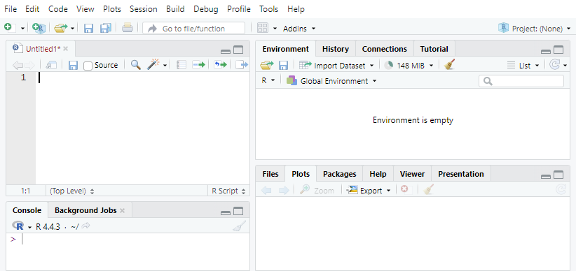
RStudio se sastoji od nekoliko ključnih panela:
Kako bi provjerili je li R ispravno instaliran, u konzolu upišemo version:
> version
_
platform x86_64-w64-mingw32
arch x86_64
os mingw32
crt ucrt
system x86_64, mingw32
status
major 4
minor 4.3
year 2025
month 02
day 28
svn rev 87843
language R
version.string R version 4.4.3 (2025-02-28 ucrt)
Za testiranje rada RStudia, možemo napisati sljedeću naredbu:
> print("Pozdrav iz RStudia!")
[1] "Pozdrav iz RStudia!"
Prvo što želimo napraviti je stvoriti novu R datoteku u kojoj ćemo spremati kôd koji pišemo. Možemo koristiti kraticu Ctrl+Shift+N ili kliknuti na New File ikonu:
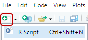
Prvo što si želimo namjestiti u RStudiu je trenutni radni direktorij (working directory), što je u biti samo mapa (folder) u kojem ćemo raditi i stvarati datoteke.
Da bi provjerili u kojem se radnom direktoriju nalazimo, koristimo komandu: getwd() - get working directory
Dok za namještanje novog direktorija, koristimo komandu: setwd("<value>") - set working directory
Za pokretanje kôda u RStudio-u označimo jednu ili više linije kôda i pritisnemo kombinaciju tipki
Ctrl+Enter
Primjer:
getwd()
# primjer ispisa u konzoli
[1] "C:/Users/user/Documents/GitHub/FIPU-APOI/Skripte/Skripta 1. - R Osnove"
setwd("~/GitHub/FIPU-APOI/Skripte/Skripta 1. - R Osnove/primjeri")
Ako ne želimo ručno pisati putanju do željenog radnog direktorija, možemo u panelu Files pronaći i namjestiti trenutni radni direktorij.
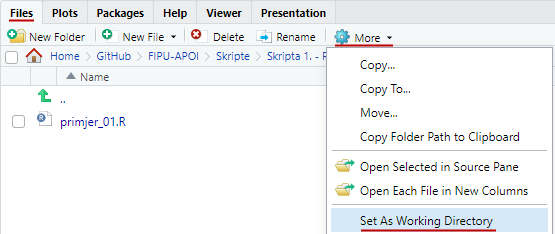
Ukoliko nismo sigurni kako neka ugrađena (built-in) funkcija ili komanda radi, uvijek možemo iću u panel Help te pretražiti dokumentaciju ili ispred funkcije staviti ? i pokrenuti je:
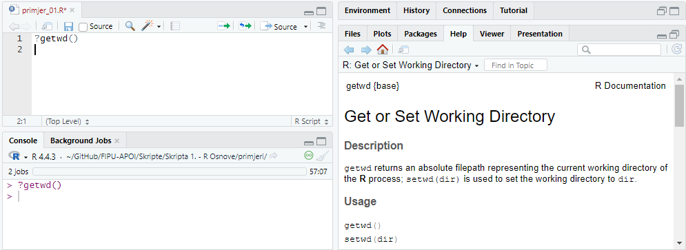
Podsjetnik, u RStudiu možete izvršiti kôd tako da:
Ctrl+Enter (Windows/Linux) ili CMD+Enter (Mac)Ctrl+L, kroz Edit → Clear Console ili pritiskom na ikonu metleU RStudiu undo se vrši kraticom
Ctrl+Z, dok kraticomCtrl+Shift+Zvršimo redo
Jednolinijski (singleline) komentari u R-u se pišu s znakom #, višelinijskih (multiline) komentara nema:
# komentar
# jedini način pisanja komentara u
# više linija
Za zakomentirat/odkomentirat više linija odjednom možemo koristiti kraticu
Ctrl+Shift+C
R podržava standardne matematičke operacije:
2 + 2 # Zbrajanje
[1] 4
5 - 3 # Oduzimanje
[1] 2
4 * 2 # Množenje
[1] 8
7 / 2 # Dijeljenje
[1] 3.5
7 %/% 2 # Cjelobrojno dijeljenje
[1] 3
2^3 # Potenciranje (2 na treću)
[1] 8
10 %% 3 # Modulo (ostatak pri dijeljenju)
[1] 1
U svim primjerima i nadalje, uglate zagrade s brojkom
[1]će predstavljati ispis u konzoli (kao u RStudiu).
R omogućuje jednostavno generiranje sekvenci brojeva pomoću operatora : ili funkcije seq()
1:10 # Generira brojeve od 1 do 10
[1] 1 2 3 4 5 6 7 8 9 10
seq(1, 10) # Isto kao 1:10
[1] 1 2 3 4 5 6 7 8 9 10
seq(1, 10, 2) # Generira brojeve od 1 do 10 s korakom 2
[1] 1 3 5 7 9
Za ispis podataka u konzolu koristimo funkciju print() ili jednostavno napišemo ime varijable
print("Hello, World!") # Ispis niza znakova
[1] "Hello, World!"
x <- 42 # Dodjeljivanje vrijednosti varijabli x
x # Ispis varijable x
[1] 42
paste()Funkcija paste() u R-u spaja više objekata (stringova, brojeva, varijabli) u jedan tekstualni niz. Možemo postaviti separator između spojenih elemenata koristeći argument sep. Ako ne postavimo separator, koristi se razmak ' '.
paste("Hello", "World") # "Hello World"
paste("2025", "03", "11", sep = "-") # "2025-03-11"
paste("Broj je:", 10) # "Broj je: 10"
Funkcija paste0() je varijanta koja ne koristi separator (nema razmaka), no isto je kao da napišemo paste() gdje je sep=""
Varijable u R-u dodjeljuju se pomoću <- ili =. Preporučeni operator je <-.
a <- 10 # Dodjela broja 10 varijabli a
b = 5 # Alternativni način (nije preporučeno)
ime <- "Ana" # Tekstualna varijabla
logicka <- TRUE # Logička varijabla
v1 <- v2 <- v3 <- "jabuka" # Dodjela iste vrijednosti više varijabli istovremeno
Možemo ispisati varijable jednostavnim navođenjem njihovih imena:
a
[1] 10
b
[1] 5
ime
[1] "Ana"
logicka
[1] TRUE
Varijable u R-u mogu imati kratka imena (kao što su x i y) ili opisna imena (kao što su godina, ime, ukupna_količina). Iako postoji fleksibilnost u odabiru imena varijabli, postoji nekoliko pravila koja treba slijediti:
.) i donje crte (_).), ne može biti praćeno brojem_)mojavarijabla, MojaVarijabla i MOJAVARIJABLA predstavljaju različite varijableTRUE, FALSE, NULL i ključnih riječi poput if, ne mogu se koristiti kao imena varijabliPrimjeri dozvoljenih imena varijabli:
mojavarijabla <- "jabuka"
moja_varijabla <- "jabuka"
mojaVarijabla <- "jabuka"
MOJAVARIJABLA <- "jabuka"
mojavarijabla.2 <- "jabuka"
.mojavarijabla <- "jabuka" # Izbjegavajte korištenje točki kod naziva varijabli
._._....___..._ <- "jabuka" # Samo zato što je moguće nemojte činiti
Primjeri nedozvoljenih imena varijabli:
2mojavarijabla <- "jabuka" # Ne može započeti s brojem
moja-varijabla <- "jabuka" # Crtica (-) nije dozvoljena
moja varijabla <- "jabuka" # Razmaci nisu dozvoljeni
_mojavarijabla <- "jabuka" # Ne smije započeti s donjom crtom
moja@varijabla <- "jabuka" # Posebni znakovi nisu dozvoljeni
.2mojavarijabla <- "jabuka" # Ne smije započeti s točkom i brojem nakon točke
TRUE <- "jabuka" # Rezervirana riječ 'TRUE' ne može biti korištena
Environment neće prikazati varijable koje počinju s točkom!
U R-u nije potrebno izričito navoditi tip podataka prilikom kreiranja varijable. R automatski prepoznaje vrstu varijable na temelju dodijeljene vrijednosti. Na primjer, ako dodijelimo brojčanu vrijednost, R će varijablu tretirati kao numeričku (numeric), dok će tekstualnu vrijednost automatski prepoznati kao znakovni tip (character). Također, vrijednost varijable se može kasnije ponovno dodijeliti, pri čemu R ažurira njezin tip ovisno o novoj dodijeljenoj vrijednosti.
Numeric (brojčani podaci) – cijeli brojevi i decimalni brojevi
broj <- 42
decimalni <- 3.14
class(broj) # Provjera vrste podataka
[1] "numeric"
class(decimalni)
[1] "numeric"
Integer (cijeli brojevi) – koriste se dodavanjem sufiksa L
cijeli <- 10L
class(cijeli)
[1] "integer"
Character (tekstualni podaci) – pohranjuju tekstualne vrijednosti (stringove)
ime <- "Ana"
class(ime)
[1] "character"
Logical (logički podaci) – mogu imati vrijednosti TRUE ili FALSE
logicka <- TRUE
class(logicka)
[1] "logical"
Factor (kategorijske varijable) – koristi se za rad s diskretnim kategorijama
boja <- factor(c("crvena", "plava", "zelena"))
class(boja)
[1] "factor"
Complex (kompleksni brojevi) – koriste se rjeđe, ali su dostupni u R-u
kompleksni <- 3 + 4i
class(kompleksni)
[1] "complex"
Sve dodane aktivne varijable i podatke možemo vidjeti u panelu Environment u RStudio-u:
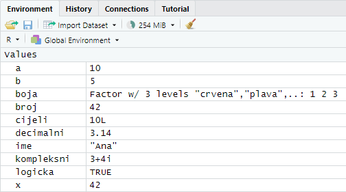
Za prikaz svih trenutno definiranih varijabli koristimo naredbu ls():
ls()
[1] "a" "b" "boja" "broj" "cijeli" "decimalni" "ime" "kompleksni"
[9] "logicka" "x"
Za brisanje određene varijable koristimo naredbu rm(<naziv_varijable>):
rm(a) # Briše varijablu 'a'
rm(list = ls()) # Za brisanje svih varijabli
Za brisanje svih varijabli iz radnog prostora također možemo kliknuti na ikonu metle unutar panela
Environment
Uvjeti omogućuju izvršavanje kôda samo ako je određeni uvjet ispunjen. U R-u možemo koristiti if, else i ifelse za kontrolu toka programa.
U slučaju kada želimo provjeriti određeni uvjet i izvršiti odgovarajući blok kôda, koristimo if uvjet:
if (1 == 0) {
print(1)
} else {
print(0)
}
[1] 0
U ovom primjeru, uvjet 1 == 0 nije zadovoljen, pa se izvršava blok u else dijelu. Rezultat će biti:
[1] "0"
Za kraće uvjete koji se mogu izravno koristiti u izrazu, koristi se ifelse funkcija. Ova funkcija omogućava donošenje odluka na temelju uvjeta, bez potrebe za blokovima kôda.
x <- c(1, 2, 3, 4, 5, 6, 7, 8, 9, 10)
ifelse(x < 5 | x > 8, x, 0)
[1] 1 2 3 4 0 0 0 0 9 10
Ovdje će se provesti provjera je li element iz vektora x manji od 5 ili veći od 8. Ako je uvjet zadovoljen, vraća se vrijednost iz vektora x, a ako nije, vraća se 0.
Petlje u R-u omogućuju ponavljanje određenih operacija više puta, što je korisno za rad s velikim količinama podataka ili kada želimo izvršiti isti zadatak više puta bez potrebe za ponovnim pisanjem kôda. U R-u najčešće korištene petlje su for, while i repeat.
for petlja koristi se za iteriranje kroz nizove vrijednosti, kao što su vektori, liste, ili drugi objekti koji se mogu podijeliti na više elemenata. U svakom koraku petlje, promjenjiva (i) varijabla prima vrijednost iz niza, a zatim se izvršavaju naredbe unutar petlje.
for (i in 1:10) {
print(paste("i = ", i))
}
[1] "i = 1"
[1] "i = 2"
[1] "i = 3"
[1] "i = 4"
[1] "i = 5"
[1] "i = 6"
[1] "i = 7"
[1] "i = 8"
[1] "i = 9"
[1] "i = 10"
Primjer sume brojeva:
suma <- 0
for (i in 1:10) {
suma <- suma + i
}
print(paste("Suma brojeva od 1 do 10 je:", suma))
[1] "Suma brojeva od 1 do 10 je: 55"
while petlja izvršava blok kôda dok je uvjet istinit. Petlja će se ponavljati sve dok uvjet koji se navede unutar zagrade bude zadovoljen.
i <- 3
while (i > 0) {
print(paste("i =", i))
i <- i - 1 # Smanjenje vrijednosti i
}
[1] "i = 3"
[1] "i = 2"
[1] "i = 1"
repeat petlja je slična while petlji, ali se razlikuje u tome što petlja uvijek mora sadržavati uvjet za izlazak pomoću break naredbe. repeat petlja će se izvršavati besprijekorno dok ne naiđe na uvjet za izlaz. Sintaksa izgleda ovako:
i <- 1
repeat {
print(paste("i =", i))
i <- i + 1
if (i %% 5 == 0) {
break
}
}
[1] "i = 1"
[1] "i = 2"
[1] "i = 3"
[1] "i = 4"
Funkcije u R-u omogućuju ponovnu upotrebu kôda i povećavaju njegovu čitljivost. One prihvaćaju argumente, izvršavaju određene operacije i mogu vratiti rezultat.
Funkcija se definira pomoću ključne riječi function, a može primati jedan ili više argumenata:
naziv_funkcije <- function(argument_1, argument_2, ...) {
# tijelo funkcije/operacije
return(varijabla/vrijednost)
}
Funkciju možemo pozvati navođenjem njezina imena i prosljeđivanjem odgovarajućih argumenata.
Funkcija bez argumenata:
pozdrav <- function() {
return("Ahoy!")
}
pozdrav()
[1] "Ahoy!"
Funkcija s jednim argumentom:
kvadrat <- function(x) {
return(x^2)
}
kvadrat(4)
[1] 16
Funkcija s više argumenata:
zbroj <- function(a, b) {
return(a + b)
}
zbroj(5, 3)
[1] 8
Argumentima funkcije možemo postaviti zadane (default) vrijednosti, što znači da će se, ako argument nije naveden prilikom poziva funkcije, automatski koristiti njegova unaprijed određena vrijednost.
Funkcija sa zadanim argumentima:
ponovi_tekst <- function(tekst = "R!", n = 3) {
return(rep(tekst, n)) # rep() -> ponavlja dani element n puta
}
ponovi_tekst(n = 5)
[1] "R!" "R!" "R!" "R!" "R!"
U R-u postoji nekoliko osnovnih struktura podataka koje se koriste za pohranu i manipulaciju podacima. Svaka od ovih struktura ima svoje specifične karakteristike i primjene.
U analizi podataka, podatkovni skup (dataset) predstavlja strukturirane podatke organizirane u obliku tablice. Tablica se sastoji od:
Matematički se podatkovni skup može prikazati kao:
Primjer tabličnog podatkovnog skupa:
| PatientID | AdmDate | Age | Diabetes | Status |
|---|---|---|---|---|
| 1 | 10/15/2014 | 25 | Type1 | Poor |
| 2 | 11/01/2014 | 34 | Type2 | Improved |
| 3 | 10/21/2014 | 28 | Type1 | Excellent |
| 4 | 10/28/2014 | 52 | Type1 | Poor |
Varijable u podatkovnom skupu mogu se klasificirati prema mjernim skalama. Postoje dvije osnovne vrste varijabli:
1. Kategorijske varijable (Categorical Variables) Kategorijske varijable predstavljaju podatke koji pripadaju određenim grupama ili kategorijama. U R-u se ovakve varijable definiraju kao faktori (factors).
Nominalne varijable (Nominal variables)
factor(c("M", "Ž", "M"))Ordinalne varijable (Ordinal variables)
factor(c("Low", "Medium", "High"), ordered = TRUE)2. Kontinuirane varijable (Continuous Variables) Kontinuirane varijable predstavljaju numeričke podatke koji se mogu mjeriti i koji imaju logičan redoslijed s definiranom skalom mjerenja.
Intervalne varijable (Interval variables)
c(10, 20, 30)Racionalne varijable (Ratio variables)
c(100, 200, 300)U R-u postoje različite strukture podataka koje omogućuju učinkovitu pohranu i manipulaciju podacima.
Klase struktura podataka (classes)
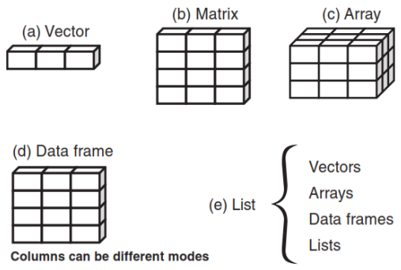
Podatkovni okvir (Data Frame) Data frame je glavna struktura podataka za pohranu podatkovnih skupova u R-u. Sličan je tablici, pri čemu stupci mogu sadržavati različite tipove podataka.
Svaka struktura podataka može sadržavati jedan ili više tipova podataka, osim vektora, matrica i polja koji moraju imati homogeni tip podataka.
Vektor je osnovna jedinica podataka u R-u. Može sadržavati elemente istog tipa, poput numeričkih, logičkih ili znakova. Vektori se kreiraju pomoću funkcije c(), koja spaja više vrijednosti u jednu sekvencu.
# Numerički vektor
brojevi <- c(1, 2, 3, 4, 5)
# Znakovni vektor
imena <- c("Ana", "Marko", "Iva")
# Logički vektor
logicki <- c(TRUE, FALSE, TRUE)
# Prazan vektor određenog tipa i duljine
prazan <- vector(mode = "numeric", length = 5)
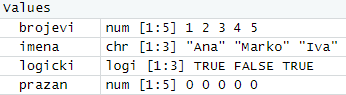
Indeksi u R-u počinju od
1(za razliku od većine programskih jezika koji počinju od 0)
Možemo dohvatiti elemente vektora pomoću uglati zagrada []:
brojevi[2] # Dohvaća drugi element (2)
[1] 2
imena[1] # Dohvaća prvi element ("Ana")
[1] "Ana"
logicki[3] # Dohvaća treći element (TRUE)
[1] TRUE
Vektori podržavaju aritmetičke i logičke operacije:
# Aritmetičke operacije nad vektorima
x <- c(2, 4, 6)
y <- c(1, 2, 3)
zbroj <- x + y # Rezultat: c(3, 6, 9)
umnozak <- x * y # Rezultat: c(2, 8, 18)
kvadrati <- x^2 # Rezultat: c(4, 16, 36)
# Logičke operacije
logicki_v <- c(TRUE, FALSE, TRUE)
negacija <- !logicki_v # Rezultat: c(FALSE, TRUE, FALSE)
Vektore možemo filtrirati koristeći logičke izraze:
brojevi <- c(10, 20, 30, 40, 50)
# Dohvat brojeva većih od 25
veci_od_25 <- brojevi[brojevi > 25] # Rezultat: c(30, 40, 50)
Osim što možemo stvarati vektore isto ih možemo i kombinirati pomoću c() funkcije:
vektor1 <- c(1, 2, 3)
vektor2 <- c(4, 5, 6)
kombinirani <- c(vektor1, vektor2) # Rezultat: c(1, 2, 3, 4, 5, 6)
R omogućuje generiranje sekvenci pomoću dvotočja : i funkcije seq():
sekvenca1 <- 1:10 # Rezultat: c(1, 2, 3, ..., 10)
sekvenca2 <- seq(2, 20, by = 2) # Rezultat: c(2, 4, 6, ..., 20)
Za ponavljanje elemenata koristimo funkciju rep(), omogućuje ponavljanje cijelog vektora više puta ili ponavljanje svakog njegovog elementa određeni broj puta.:
ponovljeni <- rep(1:3, times = 2) # Rezultat: c(1, 2, 3, 1, 2, 3)
ponovljeni2 <- rep(1:3, each = 2) # Rezultat: c(1, 1, 2, 2, 3, 3)
Dodatne funkcije za rad s vektorima:
brojevi <- c(10, 20, 40, 20, 70, 20)
| Funkcija | Opis | Primjer | Rezultat |
|---|---|---|---|
sum() |
Zbraja sve elemente u vektoru | sum(brojevi) |
180 |
min() |
Vraća minimalnu vrijednost u vektoru | min(brojevi) |
10 |
max() |
Vraća maksimalnu vrijednost u vektoru | max(brojevi) |
70 |
mean() |
Vraća prosječnu vrijednost vektora | mean(brojevi) |
30 |
unique() |
Vraća jedinstvene vrijednosti (bez duplikata) | unique(brojevi) |
10, 20, 40, 70 |
length() |
Vraća broj elemenata u vektoru | length(brojevi) |
6 |
sort() |
Sortira elemente vektora (rastući redoslijed) | sort(brojevi) |
10, 20, 20, 20, 40, 70 |
rev() |
Obrće redoslijed elemenata u vektoru | rev(brojevi) |
20, 70, 20, 40, 20, 10 |
which() |
Vraća indekse elemenata koji zadovoljavaju uvjet | which(brojevi > 30) |
3, 5 (indeksi) |
any() |
Provjerava postoji li barem jedan element koji zadovoljava uvjet | any(brojevi > 50) |
TRUE |
all() |
Provjerava zadovoljavaju li svi elementi uvjet | all(brojevi > 15) |
FALSE |
cumsum() |
Vraća kumulativni zbroj elemenata | cumsum(brojevi) |
10, 30, 70, 90, 160, 180 |
diff() |
Vraća razlike između susjednih elemenata | diff(brojevi) |
10, 20, -20, 50, -50 |
rep() |
Ponavlja elemente vektora | rep(c(1, 2), times = 3) |
1, 2, 1, 2, 1, 2 |
seq() |
Generira sekvencu brojeva | seq(from = 1, to = 10, by = 2) |
1, 3, 5, 7, 9 |
paste() |
Spaja stringove u jedan vektor | paste("Broj", 1:3) |
"Broj 1", "Broj 2", "Broj 3" |
table() |
Vraća frekvenciju svake jedinstvene vrijednosti | table(brojevi) |
10:1, 20:3, 40:1, 70:1 |
range() |
Vraća minimalnu i maksimalnu vrijednost | range(brojevi) |
10, 70 |
median() |
Vraća medijan vektora | median(brojevi) |
20 |
sd() |
Vraća standardnu devijaciju vektora | sd(brojevi) |
22.9089 |
var() |
Vraća varijancu vektora | var(brojevi) |
480 |
Matrica je dvodimenzionalna struktura podataka u R-u koja sadrži samo jedan tip podataka (npr. samo numeričke vrijednosti ili samo znakove). Kreira se pomoću funkcije matrix()
# Kreiranje 3x3 matrice s brojevima od 1 do 9 po stupcima
mat <- matrix(1:9, nrow = 3, ncol = 3)
print(mat)
[,1] [,2] [,3]
[1,] 1 4 7
[2,] 2 5 8
[3,] 3 6 9
nrow određuje broj redaka, a ncol broj stupacabyrow = TRUE# Kreiranje 3x3 matrice s brojevima od 1 do 9 po retcima
mat2 <- matrix(1:9, nrow = 3, byrow = TRUE)
print(mat2)
[,1] [,2] [,3]
[1,] 1 2 3
[2,] 4 5 6
[3,] 7 8 9
Elementi matrice dohvaćaju se pomoću [redak, stupac]:
# Dohvaćanje elementa u drugom retku i trećem stupcu
mat[2,3]
[1] 8
# Dohvaćanje cijelog retka
mat[2, ]
[1] 2 5 8
# Dohvaćanje cijelog stupca
mat[ ,3]
[1] 7 8 9
Spajanje vektora u matricu vrši se pomoću funckija cbind() (column bind) i rbind() (row bind):
# Spajanje dvaju vektora u stupce
v1 <- c(1, 2, 3)
v2 <- c(4, 5, 6)
mat3 <- cbind(v1, v2) # Kombinira vektore u stupce
print(mat3)
v1 v2
[1,] 1 4
[2,] 2 5
[3,] 3 6
# Spajanje dvaju vektora u retke
mat4 <- rbind(v1, v2) # Kombinira vektore u retke
print(mat4)
[,1] [,2] [,3]
v1 1 2 3
v2 4 5 6
Matrice možemo vizualno pregledati ako kliknemo na njihovu varijablu unutar panela Environment:
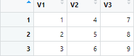
Polje (array) je višedimenzionalna struktura podataka u R-u. Dok su matrice ograničene na dvije dimenzije (redci i stupci), polja mogu imati tri ili više dimenzija. Ova struktura korisna je za pohranu podataka koji zahtijevaju više od dvije dimenzije, poput vremenskih serija ili složenih eksperimentalnih podataka.
Polja se kreiraju pomoću funkcije array(), gdje se definiraju dimenzije pomoću argumenta dim:
# Kreiranje polja s 3 reda, 2 stupca i 2 sloja
arr <- array(1:12, dim = c(3, 2, 2))
print(arr)
, , 1
[,1] [,2]
[1,] 1 4
[2,] 2 5
[3,] 3 6
, , 2
[,1] [,2]
[1,] 7 10
[2,] 8 11
[3,] 9 12
Elementi polja dohvaćaju se pomoću indeksa u obliku [redak, stupac, sloj]:
# Dohvaćanje elementa u drugom retku, prvom stupcu i drugom sloju
arr[2, 1, 2]
[1] 8
# Dohvaćanje cijelog prvog sloja
arr[ , , 1]
[,1] [,2]
[1,] 1 4
[2,] 2 5
[3,] 3 6
# Dohvaćanje cijelog drugog stupca u svim slojevima
arr[ , 2, ]
[,1] [,2]
[1,] 4 10
[2,] 5 11
[3,] 6 12
Polja podržavaju aritmetičke operacije, ali moraju imati iste dimenzije:
arr <- array(1:12, dim = c(3, 2, 2))
arr2 <- array(13:24, dim = c(3, 2, 2))
zbroj <- arr + arr2
print(zbroj)
, , 1
[,1] [,2]
[1,] 14 20
[2,] 16 22
[3,] 18 24
, , 2
[,1] [,2]
[1,] 26 32
[2,] 28 34
[3,] 30 36
Primjeri upotrebe polja:
In a nutshell:
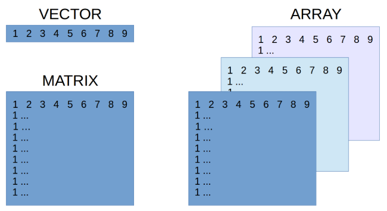
Okvir podataka (data.frame) je jedna od najčešće korištenih struktura podataka u R-u. Omogućuje pohranu podataka u tabličnom formatu, gdje svaki stupac može sadržavati različite tipove podataka (npr. numeričke, znakovne, logičke).
Okvir podataka kreira se pomoću funkcije data.frame(), gdje se svaki stupac definira kao vektor:
podaci <- data.frame(
Ime = c("Ana", "Marko", "Iva", "Pero"),
Dob = c(25, 30, 22, 25),
Visina = c(168, 175, 160, 190)
)
print(podaci)
Ime Dob Visina
1 Ana 25 168
2 Marko 30 175
3 Iva 22 160
4 Pero 25 191
Ime je znakovni, Dob i Visina su numerički)Također ih kao i matrice možemo vizualno pregledati ako kliknemo na njihovu varijablu unutar panela Environment:
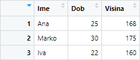
Da bi dobili dimenzije tablice koristimo funkciju dim() ili nrow() za broj redaka i ncol() za broj stupaca:
dimenzije <- dim(podaci)
print(paste("Broj opservacija (redaka):", dimenzije[1]))
[1] "Broj opservacija (redaka): 4"
print(paste("Broj varijabli (stupaca):", dimenzije[2]))
[1] "Broj varijabli (stupaca): 3"
print(paste("Broj opservacija (redaka):", nrow(podaci)))
[1] "Broj opservacija (redaka): 4"
print(paste("Broj varijabli (stupaca):", ncol(podaci)))
[1] "Broj varijabli (stupaca): 3"
Ukoliko želimo ispraviti ili promijeniti neke podatke možemo korisitit funkciju fix() koja otvara grafički editor za interaktivno uređivanje objekata (vektora, okvira podataka, funkcija):
Uređivanje okvira podataka:
fix(podaci) # Otvara editor za podatke
Podacima u okviru možemo pristupiti na više načina:
Pristup stupcima pomoću $:
podaci$Ime # Vraća vektor imena
[1] "Ana" "Marko" "Iva" "Pero"
Pristup određenom retku i stupcu pomoću []:
podaci[2, 3] # Vraća vrijednost u drugom retku i trećem stupcu
[1] 175
Pristup cijelom retku ili stupcu:
podaci[2, ] # Vraća drugi redak
Ime Dob Visina
2 Marko 30 175
podaci[, 3] # Vraća treći stupac
[1] 168 175 160 191
Pristup pomoću imena stupaca:
podaci["Visina"] # Vraća stupac Visina kao podokvir
Visina
1 168
2 175
3 160
4 190
Novi stupac možemo dodati jednostavno dodjeljivanjem vrijednosti:
# Dodavanje stupca "Težina"
podaci$Težina <- c(55, 80, 60, 87)
print(podaci)
Ime Dob Visina Težina
1 Ana 25 168 55
2 Marko 30 175 80
3 Iva 22 160 60
4 Pero 25 191 87
Stupac možemo izbrisati postavljanjem tog stupca na NULL:
# Brisanje stupca "Težina"
podaci$Težina <- NULL
print(podaci)
Ime Dob Visina
1 Ana 25 168
2 Marko 30 175
3 Iva 22 160
4 Pero 25 191
Podatke možemo filtrirati koristeći logičke uvjete:
# Filtriranje osoba starijih od 23 godine
stariji_od_23 <- podaci[podaci$Dob > 23, ]
print(stariji_od_23)
Ime Dob Visina
1 Ana 25 168
2 Marko 30 175
3 Pero 25 191
Podatke možemo sortirati pomoću funkcije order():
podaci <- data.frame(
Ime = c("Ana", "Marko", "Iva", "Petar", "Marija", "Ivan"),
Dob = c(25, 30, 25, 28, 25, 30),
Visina = c(168, 175, 160, 180, 165, 178)
)
# Sortiranje po dobi (silazno)
sortirani_podaci <- podaci[order(podaci$Dob, decreasing = TRUE), ]
print(sortirani_podaci)
Ime Dob Visina
2 Marko 30 175
1 Ana 25 168
3 Iva 22 160
Funkcije poput summary() i aggregate() koriste se za sažimanje podataka:
# Sažetak podataka
summary(podaci)
Ime Dob Visina
Length:6 Min. :25.00 Min. :160.0
Class :character 1st Qu.:25.00 1st Qu.:165.8
Mode :character Median :26.50 Median :171.5
Mean :27.17 Mean :171.0
3rd Qu.:29.50 3rd Qu.:177.2
Max. :30.00 Max. :180.0
# Agregacija prosječne visine po dobi
aggregate(Visina ~ Dob, data = podaci, FUN = mean)
Dob Visina
1 25 164.3333
2 28 180.0000
3 30 176.5000
Funkcija colnames() koristi se za dohvaćanje ili promjenu naziva stupaca u okviru podataka data.frame.
Dohvaćanje naziva stupaca:
podaci <- data.frame(
Ime = c("Ana", "Marko"),
Dob = c(25, 30),
Visina = c(168, 175)
)
# Dohvaćanje naziva stupaca
nazivi <- colnames(podaci)
print(nazivi)
[1] "Ime" "Dob" "Visina"
Promjena naziva stupaca:
# Promjena naziva svih stupaca
colnames(podaci) <- c("Name", "Age", "Height")
# Promjena naziva određenog stupca
colnames(podaci)[2] <- "Year"
print(podaci)
Name Year Height
1 Ana 25 168
2 Marko 30 175
Faktori su struktura podataka u R-u koja se koristi za pohranu kategorijskih varijabli. Kategorijske varijable su one koje imaju ograničen broj različitih vrijednosti (npr. spol, boja, razredi). Faktori su posebno korisni u statističkim analizama i modeliranju jer R interno pohranjuje faktore kao brojeve, što omogućuje efikasniju obradu podataka.
Faktori se kreiraju pomoću funkcije factor(). Ona pretvara vektor u faktor i automatski određuje razine (levels) faktora:
# Kreiranje faktora za spol
spol <- factor(c("M", "Ž", "M", "Ž", "M"))
print(spol)
[1] M Ž M Ž M
Levels: M Ž
M i Ž su razine (levels) faktora.M = 1, Ž = 2), ali prikazuje ih kao znakovne vrijednostiRazine faktora mogu se promijeniti pomoću argumenta levels:
# Promjena redoslijeda razina
spol <- factor(spol, levels = c("Ž", "M"))
print(spol)
[1] M Ž M Ž M
Levels: Ž M # Sada je prva razina `Ž`, a druga `M`
Ako želimo dodati nove razine koje nisu prisutne u podacima, možemo koristiti argument levels:
# Dodavanje nove razine "N" (nepoznato)
spol <- factor(spol, levels = c("M", "Ž", "N"))
print(spol)
[1] M Ž M Ž M
Levels: M Ž N
N nije prisutna u podacimaFaktori se mogu pretvoriti u znakovne vektore pomoću funkcije as.character() ili numeričke vektore pomoću funkcije as.numeric():
# Pretvorba faktora u znakovni vektor
spol_znakovni <- as.character(spol)
print(spol_znakovni)
[1] "M" "Ž" "M" "Ž" "M"
# Pretvorba faktora u numerički vektor
spol_numericki <- as.numeric(spol)
print(spol_numericki)
[1] 1 2 1 2 1
Primjeri upotrebe faktora:
Lista je fleksibilna struktura podataka koja može sadržavati različite tipove podataka, uključujući vektore, okvire podataka i čak druge liste. Liste se kreiraju pomoću funkcije list().
AKA:
moja_lista <- list(
broj = 42,
imena = c("Ana", "Marko"),
matrica = matrix(1:4, nrow = 2)
)
print(moja_lista)
$broj
[1] 42
$imena
[1] "Ana" "Marko"
$matrica
[,1] [,2]
[1,] 1 3
[2,] 2 4
moja_lista$broj
[1] 42
moja_lista$imena[1]
[1] "Ana"
moja_lista$matrica[1,2]
[1] 3
U R-u postoji više načina za učitavanje podataka iz različitih izvora, poput tekstualnih datoteka, Excel datoteka, baza podataka ili internetskih izvora.
Tekstualne datoteke (npr. CSV, TXT) najčešći su izvor podataka. R ima ugrađene funkcije za čitanje ovih datoteka.
CSV (Comma-Separated Values) datoteke su tablični podaci pohranjeni u tekstualnom obliku, gdje su vrijednosti odvojene zarezom.
# Učitavanje CSV datoteke
podaci <- read.csv("data/primjer.csv")
# Prikaz prva 3 retka
head(podaci, n = 3L)
Ime Dob Visina Grad
1 Ana 25 168 Zagreb
2 Marko 30 175 Split
3 Iva 22 160 Rijeka
# Prikaz zadnja 3 retka
tail(podaci, n = 3L)
Ime Dob Visina Grad
4 Petar 28 180 Osijek
5 Marija 35 165 Zadar
6 Ivan 40 178 Dubrovnik
read.csv():
file: Putanja do datoteke.header: Ako je TRUE, prvi redak se koristi kao nazivi stupaca (default je TRUE)sep: Znak koji odvaja vrijednosti (default je ,)Za datoteke s drugim separatorima (npr. tabulator, točka-zarez, razmak) koristi se funkcija read.table().
# Učitavanje TXT datoteke s razmakom kao separatorom
podaci <- read.table("data/primjer.txt", header = TRUE, sep = " ")
# Prikaz prva 2 retka
head(podaci, n = 2L)
Ime Dob Visina Grad
1 Ana 25 168 Zagreb
2 Marko 30 175 Split
read.table():
header: Ako je TRUE, prvi redak se koristi kao nazivi stupacasep: Znak koji odvaja vrijednosti (npr. sep = "\t" za tabulator)Za učitavanje podataka iz Excel datoteka (XLSX) potreban je paket readxl:
install.packages("readxl") # Instalacija paketa
library(readxl) # Učitavanje paketa
# Učitavanje Excel datoteke
podaci <- read_excel("putanja/do/datoteke.xlsx", sheet = 1)
# Prikaz prva 2 retka
head(podaci, n = 2L)
# A tibble: 2 × 4
Ime Dob Visina Grad
<chr> <dbl> <dbl> <chr>
1 Ana 25 168 Zagreb
2 Marko 30 175 Split
read_excel():
path: Putanja do Excel datotekesheet: Naziv ili indeks lista koji se želi učitati (default je prvi list)range: Opseg ćelija koji se želi učitati (npr. range = "A1:D10")R može učitati podatke s interneta, bilo izravno s web stranice ili iz API-ja.
Za učitavanje podataka s API-ja koristi se paket httr.
install.packages("httr") # Instalacija paketa
library(httr)
# Zahtjev za informacije o repozitoriju
odgovor <- GET("https://api.github.com/repos/tidyverse/ggplot2")
# Pretvorba odgovora u JSON
podaci <- content(odgovor, "parsed")
# Prikaz podataka
print(podaci)
U R-u postoji veliki broj ugrađenih skupova podataka koji su dostupni odmah nakon pokretanja R-a. Ovi podaci često se koriste za demonstraciju, vježbu i testiranje različitih funkcija i paketa. Ugrađeni podaci mogu se učitati pomoću funkcije data().
Neki primjeri ugrađenih skupina podataka:
| Skup podataka | Opis |
|---|---|
mtcars |
Podaci o različitim modelima automobila iz 1974. godine. Sadrži informacije o potrošnji goriva, broju cilindara, snazi motora i drugim karakteristikama |
iris |
Podaci o cvijetu perunike (Iris). Sadrži mjere za duljinu i širinu latica i čašičnih listova za tri različite vrste perunike |
airquality |
Podaci o kvaliteti zraka u New Yorku tijekom 1973. godine. Sadrži mjerenja ozona, sunčevog zračenja, temperature i drugih varijabli |
Titanic |
Podaci o preživjelima na Titanicu. Organizirani u obliku tabele s informacijama o putnicima, uključujući klasu, spol, dob i preživljavanje |
USArrests |
Podaci o broju uhićenja po 100.000 stanovnika u SAD-u za različite zločine (ubojstvo, napad, silovanje) i postotak urbane populacije po državi |
ChickWeight |
Podaci o težini pilića tijekom vremena, s informacijama o prehrani i dobi |
Funkcija data() prikazuje popis svih ugrađenih skupova podataka dostupnih u trenutnoj R sesiji. Ako želite učitati određeni skup podataka, jednostavno navedite njegovo ime kao argument:
# Prikaz popisa svih ugrađenih skupova podataka
data()
# Učitavanje određenog skupa podataka
data("mtcars") # Učitava skup podataka 'mtcars'
cars <- data.frame(mtcars)
head(cars)
mpg cyl disp hp drat wt qsec vs am gear carb
Mazda RX4 21.0 6 160 110 3.90 2.620 16.46 0 1 4 4
Mazda RX4 Wag 21.0 6 160 110 3.90 2.875 17.02 0 1 4 4
Datsun 710 22.8 4 108 93 3.85 2.320 18.61 1 1 4 1
Hornet 4 Drive 21.4 6 258 110 3.08 3.215 19.44 1 0 3 1
Hornet Sportabout 18.7 8 360 175 3.15 3.440 17.02 0 0 3 2
Valiant 18.1 6 225 105 2.76 3.460 20.22 1 0 3 1
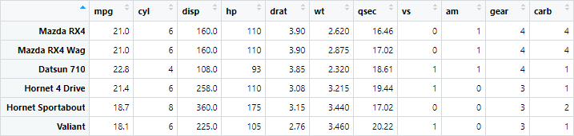
Nakon učitavanja podataka, važno je provjeriti njihovu strukturu i očistiti ih od eventualnih grešaka.
podaci <- read.csv("data/primjer_with_nulls.csv")
# Prikaz strukture podataka
str(podaci)
'data.frame': 6 obs. of 4 variables:
$ Ime : chr "Ana" "" "Iva" "Petar" ...
$ Dob : int 25 30 22 28 35 40
$ Visina: int NA 175 160 180 165 NA
$ Grad : chr "Zagreb" "Split" "Rijeka" "" ...
# Sažetak podataka
summary(podaci)
Ime Dob Visina Grad
Length:6 Min. :22.00 Min. :160.0 Length:6
Class :character 1st Qu.:25.75 1st Qu.:163.8 Class :character
Mode :character Median :29.00 Median :170.0 Mode :character
Mean :30.00 Mean :170.0
3rd Qu.:33.75 3rd Qu.:176.2
Max. :40.00 Max. :180.0
NA's :2
# Broj nedostajućih vrijednosti po stupcu
colSums(is.na(podaci))
Ime Dob Visina Grad
0 0 2 0
# Uklanjanje redaka s nedostajućim vrijednostima
podaci_clean <- na.omit(podaci)
podaci_clean
Ime Dob Visina Grad
2 30 175 Split
3 Iva 22 160 Rijeka
4 Petar 28 180
5 Marija 35 165 Zadar
# Uklanjanje redaka gdje bilo "Ime" ili "Grad" ima prazne stringove
podaci_clean <- podaci_clean[podaci_clean$Ime != "" | podaci_clean$Grad != "", ]
podaci_clean
Ime Dob Visina Grad
3 Iva 22 160 Rijeka
5 Marija 35 165 Zadar
Skup podataka mtcars sadrži informacije o različitim modelima automobila iz 1974. godine. Podaci uključuju potrošnju goriva, broj cilindara, snagu motora i druge karakteristike.
Učitajte skup podataka mtcars u varijablu naziva cars i odgovorite na sljedeća pitanja:
Koliko ima opservacija (redaka) i varijabli (stupaca)?
Navedite kojeg su tipa varijable.
Ima li nedostajućih vrijednosti?
Izmijenite nazive stupaca tako da budu na hrvatskom jeziku.
colnames()mpg → potrosnjacyl → cilindridisp → zapreminahp → snagadrat → omjerwt → tezinaqsec → ubrzanjevs → motoram → mjenjacgear → brzinecarb → karburatoriKoja je minimalna, maksimalna i prosječna potrošnja goriva? - Hint: min(), max(), mean()
Koliko je različitih brojeva cilindara u skupu podataka? - Hint: unique()
Koliko je automobila s ručnim mjenjačem (mjenjac = 1)? - Hint: sum()
Kreirajte novi dataframe koji sadrži sve podatke za automobile s 8 cilindara. Spremite podatke u varijablu naziva cars_8cyl.
Koliko iznosi prosječna težina automobila s 8 cilindara?
Koliko iznosi potrošnja goriva za prva 3 automobila? - Hint: head()
Koliko iznosi potrošnja goriva za posljednjih 5 automobila? - Hint: tail()
Prikažite sažetak svih numeričkih varijabli u skupu podataka.